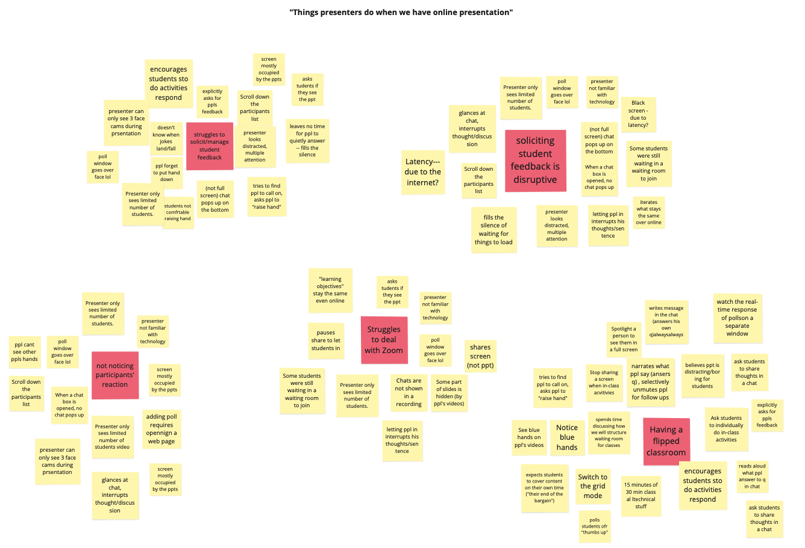
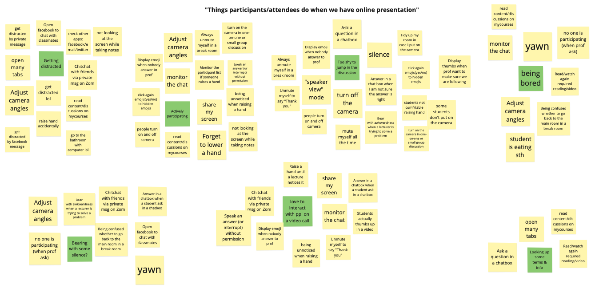
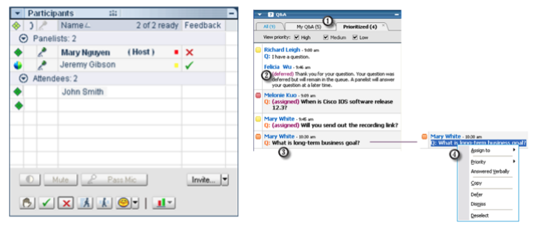
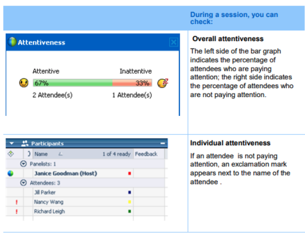
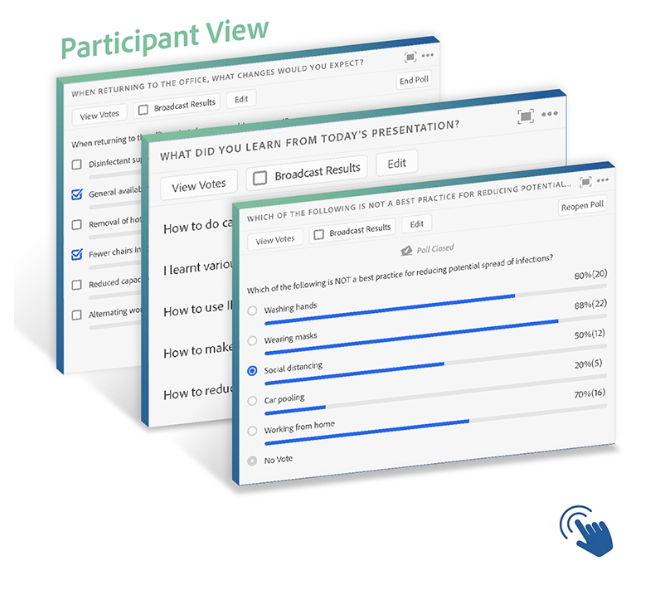
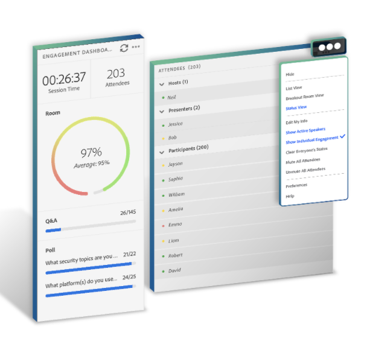
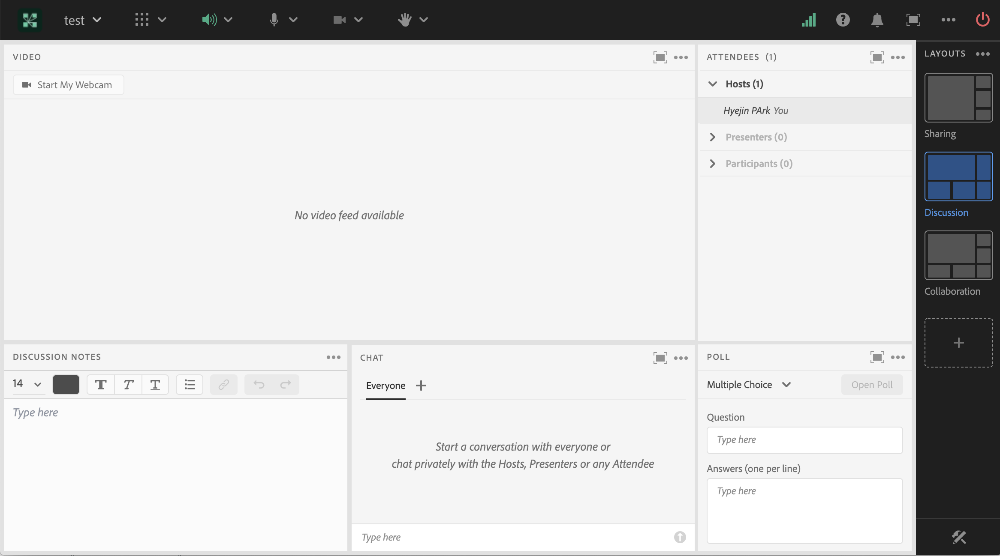
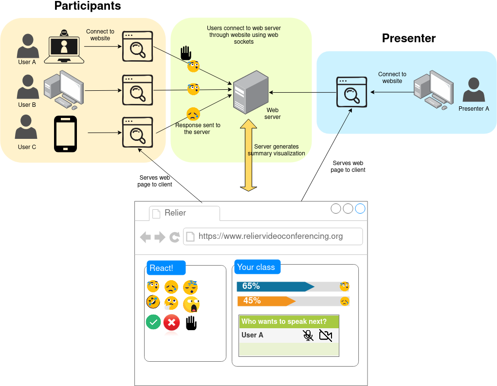

In order to observe two user groups (presenters and participants), we watched different recorded Zoom presentations and generated sticky notes about our findings on white board software Miro to define mental models. In the same videos, we observed the presenters and participants at the same time. To validate our findings, we often revisited a particular scene and watched in pairs.
After listing all distinguished tasks on the white boards, we grouped them by behavior affinity.
 Presenters struggle to solicit and assess participant engagement and responses to presentation. Presenters have been shown to ask (or sometimes appear to plead in the instances of educational presentations) for participant feedback. Participants that are familiar with the presentation do manage to provide feedback through unmuting and speaking, messaging in chat, or using features like hand raising. Unfortunately, most participants don’t provide any feedback to the presenter and have their camera off, seemingly disengaged. This appears to make presenters feel uncomfortable. On the other hand, when presenters want to assess participant reaction (for instance by reading the chat), it often interrupts their presentation.
As far as presenters are concerned, they can be grouped by two core
attributes:
prior knowledge of video conferencing
and
degree in interest to engage people.
The inability for presenters and participants to engage and have
dialogue with one another is a major issue with video conferencing.
The lack of low risk, non-disruptive, simple-to-use features that
allow participants to comfortably engage with presentations results in
lower levels of engagement. For many presenters, participant
engagement and reaction serves as a measure of the presentation’s
success. Unfortunately, because of the suppressed participant
reaction, presenters can be made to feel boring and awkward.
Furthermore, this depression of participation can make participating
even harder as the norm becomes silence and turned off webcams, making
speaking up or asking a question all the more intimidating and
daunting to participants. This lack of engagement is especially
troublesome for presentations with educational objectives as
engagement is a necessary component for learning. So far, we have yet
to find a product that finds a way to support participants' engagement
and interaction with the presentation.
Due to its high level of security and variety of useful features that support educators, Zoom is used as a virtual classroom platform in many educational institutions including McGill University. On Zoom, students are able to provide feedback to their lecturers via emoji and express their reactions by sending a clap or thumbs up. Moreover, students can display a “raise hand” icon if they want to get permission to speak during the class. These various features of Zoom allow students to transform their behavior in off-line class into a virtual class so that students are able to feel strong telepresence throughout the class.
However, these emoji buttons are scattered throughout the software which sometimes results in undesired confusion. For example, you can express “thumbs up” via emoji reactions tab or participants list. Users will likely be confused with the differences between the two. In addition, emojis reactions are often not noticed by lecturers as features like screen sharing often occupies the entire lecturer’s screen. Therefore, students often don’t get a chance to interact with an educator.
Finally, the current layout of Zoom is poorly designed. Students need to manually place windows of participants and chat on their screen when needed as Zoom only provides one default layout; chatbox on the left corner, participants list on the left top and screen shared on the middle. Therefore, on a default layout if a chat box is too small due to one’s laptop size, having a discussion in a chat is somewhat challenging.
Cisco Systems also has a video conferencing tool: WebEx, which offers a range of useful features for presenters and participants in online training sessions such as presentations, webinars or online classes.
Cisco Webex Training offers an easy way of tracking questions and documenting responses using a threaded Q&A window as well as collecting feedback from the participants through live polling. Participants are able to react to the presentation through the ‘raise hand’, ‘yes’, ‘no’, ‘go faster’ and ‘go slower’ buttons as well as express their feelings through emojis.
Furthermore, presenters can track participant’s attention by using the Attention Indicator which shows if a participant has minimized the training session window or has brought another window in focus on top of the training session window. This is useful for recording student’s participation when teaching remotely.
However, WebEx is slow when connecting to meetings and its video quality is lower than Zoom’s. It also does not have a lot of room for customization and only allows to visualize a summary of participant’s yes/no reactions. When reacting with emojis or other buttons, the presenter has to check the symbols next to each participant’s name in the list, which is hard to do in a session with many participants. Additionally, participants can’t react anonymously and WebEx isn’t free to use.
Adobe has several video conferencing products for online meetings, online learning and webinars; Adobe Connect is especially designed for educational settings. Adobe Connect has a variety of interactive features both for educators and students.
First, presenters can easily run a poll including yes or no, multiple choice or open-ended short answers questions during the presentation. The results are visualized right after the poll is closed. Students (or meeting participants) can display reactions via emoji. Apart from “raise hand”, “agree or disagree”, “applaud”, “laugh” and “step away” emojis, they also have “request” emojis for asking educators to “speak louder”, “speak softer”, “speed up” and “speed down”.
Second, Adobe Connect has a very sophisticated feature to assess audience participation. Connect collects and analyses various parameters related to participant engagement and provides presenters with a real-time aggregate “engagement score”. The Engagement Index Calculation uses: chat activity, Q&A activity, poll activity, file download, status updates, and other metrics to come up with the engagement score.
Lastly, Adobe Connect provides a different layout depending on the purpose of sessions (sharing, discussion, collaboration and customized layout). With a single click, Adobe Connect’s layout is automatically adjusted.
However, Adobe Connect is one of the most expensive available solutions for web conferencing. For example one of their published plans costs 50$ per month and can only host up to 25 participants; for bigger meetings (100-1500 participants) the plans start at 130$ per month.
Furthermore, with the ‘Status View’, hosts can only see the reactions of participants that are raising their hands, agreeing, disagreeing, or have stepped away. For the remaining reactions and requests, the host has to switch to the ‘Participant List View’ and see the reactions next to each participant name (similar to Zoom). Additionally, participants can’t share their reactions anonimously.
Other disadvantages of Adobe Connect include its dependency on internet bandwidth (when viewing on the browser) or its slowness to load (when using the desktop app). Therewith, the interface might be fairly complicated for new users.
One of the main advantages of our proposed system is the ability for participants to react and engage in a presentation without garnering overwhelming attention and/or being disrupting, while still being easily visible to the presenter.
Presenters will be able to interpret participant engagement with ease through our proposed real time visualization and aggregation of participant’s reactions and responses This eliminates the need for presenters to switch to different tabs or change the view mode to engage more comfortably with participants.
Finally, our system is intended to be free and open-source so presenters can customize it to their needs and can use it with any pre-existing video-conferencing tool without having to spend the extra dollars.
The system will benefit our personas in the following ways:
As a member of a peer-teaching community, our system will allow her to easily visualize her peer’s reactions when presenting a topic during one of their teaching sessions. She will be able to get a sense of how many participants are following and assess their reactions easily. This way, she can immediately pause and give further explanations when the crowd is feeling lost or speed up her presentation if they’re feeling bored. She will be able to visualize all this information on the same window preventing her from losing time and/or participant’s attention during interactive exercises.
Dakota will be able to interact with their audience with more ease using our software. They will be able to see when participants found their jokes funny, and if they are liking the content they are presenting. They will also be able to poll their audience to make sure they are following their presentation and realize interactive exercises that engage everyone with the content.
With our system, Jamie can actively participate in discussions around business presentations, he will be able to raise his hand without having to dig through several menus or drop downs. He won’t have to interrupt the presentation in order to ask questions and will get a chance to be designated to speak in an orderly manner. Furthermore, he will be able to see other participants' reactions and not feel like he is alone in the presentation.
Finally, Priscilla, the shy student who is afraid of sounding stupid when participating in discussions, and is too shy to giving a wrong answer or asking for clarification when she is lost, will benefit from our system. The ability to anonymously vote in quick polls as well as expressing her feelings and reactions to the presentation without being the center of attention will allow her to participate in low risk ways with the class.

Our team is composed by one master’s CS student, one Information Studies master student and one fourth-year undergraduate CS student. We are all enthusiastic in user-centered design. We have splitted the tasks to match each team member's skills while allowing us to work collectively and learn from each other in the domains that we feel less comfortable.
We feel confident we will be able to implement at least a prototype of this system. In order to minimize technical complications and focus on the user design aspect, we plan to implement the features we would like to have in a video conferencing system as a stand alone dynamic website.
Using a website prototype is particularly helpful given our collective programming experience. All of us (to varying degrees) have experience with web development (both front end and back end) and client-server applications.
To ensure we are on schedule, we have set weekly group meetings (every Friday noon) to discuss the progress done, assess next steps, and provide each other with support if need be :). We will use GitHub and Google Drive to work collaboratively.